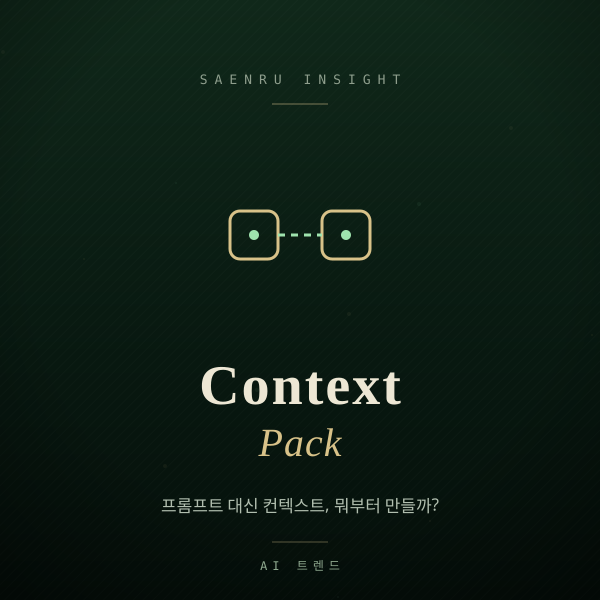

Forget Better Prompts — Build a Context Pack Instead
Why teams are shifting from prompt tweaking to context engineering, and how to write your first one-page context pack.

You've probably heard someone say that prompt engineering is dead. That's not quite right — the center of gravity has simply moved. As models get better, how you phrase a request matters less, while what material you hand over matters more. That work now has a name: context engineering.
Take a simple request: "Write the product page copy for our new item." On its own, you'll get something plausible that could belong to any company. Now attach the spec sheet, last month's best-performing product page, three phrases customers keep repeating in reviews, and one rule — "never use hype words" — and the output becomes something you can actually edit and ship. The instruction barely changed. The context did.
How is context engineering different from writing prompts?
A prompt is a one-time instruction; context is the background material the AI consults every single time. A cleverly worded prompt disappears when the chat ends, but context accumulates as a team asset. That's why effective teams stop rewriting prompts and start curating what they feed the model.
Developers already normalized this. Many repos now carry an AGENTS.md or CLAUDE.md file at the root, listing project rules, folder structure, and things never to do — and coding tools read it before acting. Marketing, support, and ops work exactly the same way. The only difference is that your file is called "team context pack."
What goes into a context pack, and where do I start?
Don't build a knowledge base. Start with one or two pages covering the one or two tasks you repeat most often, and write down the background knowledge a human already carries in their head. Pretend you're onboarding a new hire and it writes itself fast.
- Who you are and who you serve: what you sell, who your core customer is, and who is explicitly not your customer.
- Tone and banned words: e.g. polite but plain, one emoji maximum, never claim "the best" or "number one."
- Hard facts: pricing, shipping and refund policy, business hours, approved answers to common questions.
- Three good examples: the actual text of a page, email, or support reply that worked well.
- Hard limits: no improvised discounts, no mentioning unreleased features, never ask for sensitive personal data.
A single Google Doc or Notion page is enough. Paste it in when needed, or upload it to a persistent workspace like ChatGPT Projects, a custom GPT, or a Claude Project. The point is that the pack travels with you even when your tooling changes.
Is more context always better?
No. Past a certain point, adding material lowers accuracy while raising cost and latency. Two documents that match the task beat ten that vaguely relate to it.
- Stale material: leave last year's price list in there and the model will confidently quote old prices. Put a "last updated" line at the top and review quarterly.
- Contradictory rules: "be casual" and "be formal" in the same doc means the tone wobbles every time. When rules conflict, delete one.
- Whole documents pasted in: three relevant paragraphs beat a thirty-page manual almost every time.
- Unverified additions: after changing the pack, re-run the same five questions you always use and check whether answers actually improved.
Here's this week's version of the job: pick your most repeated task, draft a one-page context pack, run the same request once without it and once with it, then write whatever you liked about the better output back into the pack. That single page will show results faster than a hundred rounds of prompt tweaking.